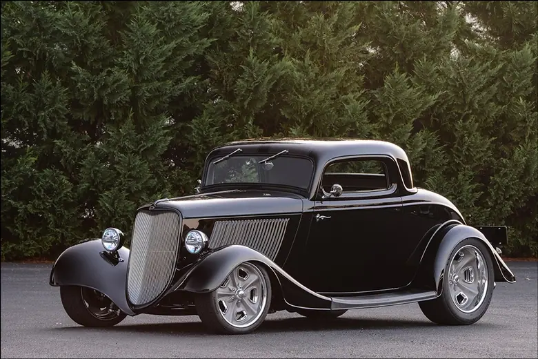
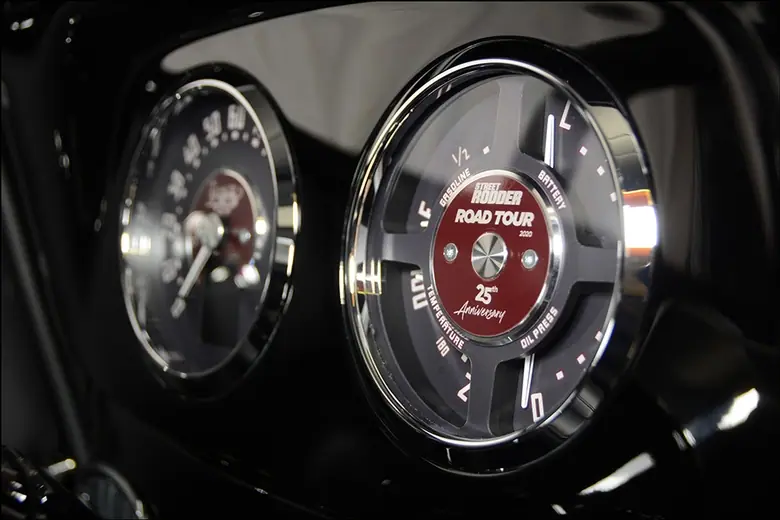
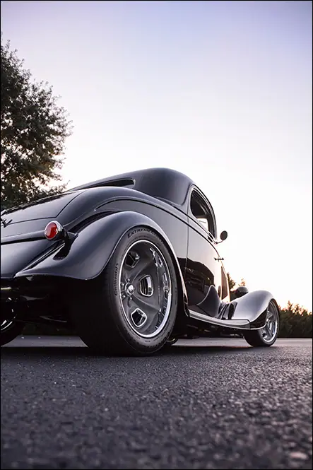
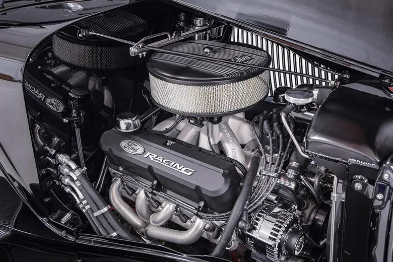
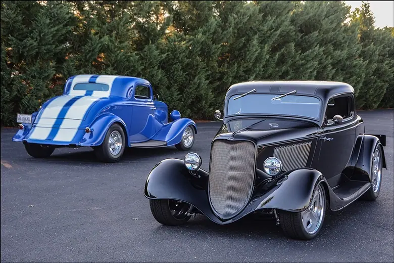
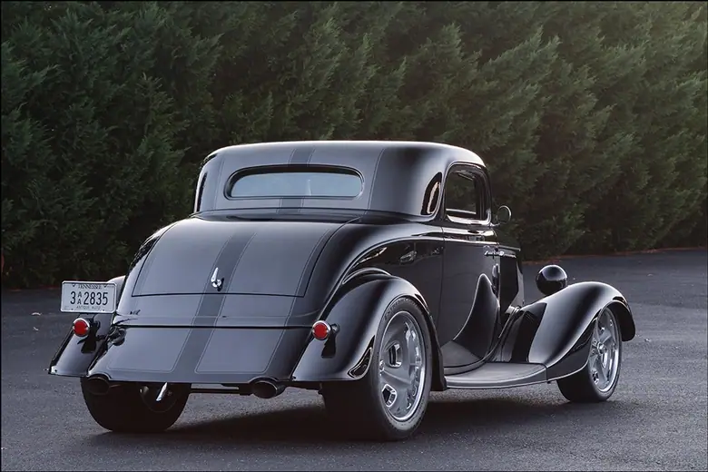

1934 Ford Coupe
From Dakota Digital


Bookends
25 years ago in 1996, Street Rodder magazine launched their first “Road Tour”. The premise from day 1 was to build a hot rod from aftermarket parts and drive it all over the country. This was great advertising for Street Rodder magazine as well as the companies involved in the projects. In 82 days, writer and Road Tour director Jerry Dixey logged 27,000 miles in a blue 1934 Ford Coupe. In case you’re wondering, that’s 329 miles each day, hoping each mile that you don’t blow a head gasket, spit a fan belt off, lose the rear main seal or that the one strategically placed zip tie holds up for the duration.

Once Street Rodder was done, the car was to be given away to one lucky winner. As the story goes, a woman found a “blow card” (those annoying subscription pieces that fall out of your new magazine) on a grocery store floor, filled out her information, sent it in and eventually got the lucky phone call. This is where Skip and Debbie Walls of Lokar Performance Products come into the picture. Debbie had spied the blue and white 34 at various car shows and fell in love. After some time, Skip was able to track down the woman that won the car and swing a deal. He presented Debbie with car #1 from the Street Rodder Road Tour.
The Road Tour continued on for 25 years, a new hot rod annually for each new tour. Jerry Dixey was at the helm of each of the new cars logging thousands of miles from coast to coast and border to border, and he got paid for this too! We’re not going to talk much about 2020 other than the fact that the black 34 Ford was the last and 25th car to be built for the Road Tour. And yes, Skip and Debbie Walls of Lokar own this one too.

A lot has changed in 25 years, the first car has a 350 small block Chevy engine and a 700R4 transmission, the 25th car has a Ford Performance 427 ci crate engine with Holley fuel injection. Vintage Air A/C, Custom Autosound stereo, and custom designed Dakota Digital RTX gauges that are actually for 1947-53 Chevy Trucks. Eat it up Ford lovers, Chevy parts in a Ford…AGAIN!

Precision Hot Rods and Fabrication of Macedonia, OH built the latest version, Lobeck’s Hot Rod Shop in Cleveland built the first car. BUT, the same people built and painted both cars. The same only different as my dad says. Some years back Barry Lobeck passed away, Danny Tesar was at Lobeck’s, and later Precision Hot Rods and was involved in both builds.
Unfortunately, the Street Rodder Road Tour is now a thing of the past. #1 and #25 are both on display in the Lokar Performance Products showroom in Knoxville Tennessee. According to Brian Downard, the V.P. at Lokar, the blue car is pushing 100,000 ticks on the odometer, the black car is just getting warmed up!

Manuals
Also on dakotadigital.com.